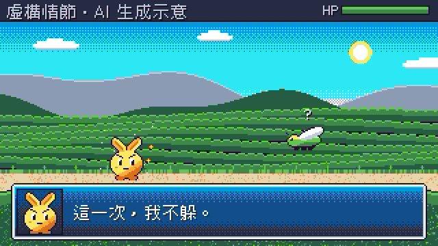
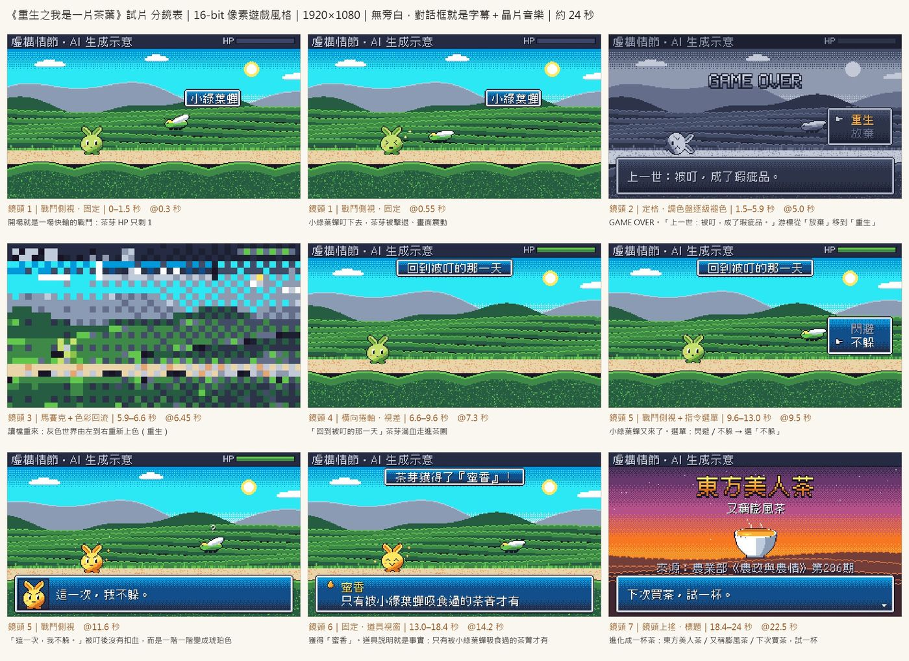

2026 AI 數位創意行銷力：臺灣 × 明新｜影片組實作教學
用 Claude ＋ Lemo-Opuscar，
做出你的參賽行銷短片
這份教學帶你用 AI 做出一支 30–90 秒的行銷短片，並符合競賽的作品規格與 AI 使用規範。你負責選題、查證和把關；Claude 負責寫程式，把畫面、配樂和字幕做出來。照下面五步走。
作品收件截止：12 月 8 日（二）中午 12:00 做一支片要跑 30–60 分鐘，修改也要時間，請不要留到最後一天。[23][2]
工具說明依 2026 年 11 月 25 日查到的官方資料整理（Lemo-Opuscar 2.0.0）；競賽規則整理自活動簡章，一切以主辦單位的簡章與公告為準。
競賽重點：先知道要交什麼
以下整理自活動簡章的影片組規定[23]。這套工具做的是影片，漫畫組不在本教學範圍。
30–90 秒的行銷短片
行銷短片、故事影片或創意廣告皆可。MP4 檔，建議 H.264、1080p，直式或橫式都收，檔案不超過 500MB。中文、英文皆可。
臺灣產業特色／明新科大
每件作品只能選一個主題。要設定明確的目標受眾與行銷訴求，並說明希望觀眾採取的行動。
個人或 2–3 人
學生與教職員不可混合組隊；每人只能參與 1 件作品。參賽者須出席 11 月 25 日工作坊（團隊至少 1 人）。
至少一個環節用 AI，並據實揭露
不限工具。但你要保有主題判斷、內容查核與人工整合，不能把 AI 生成的內容說成全部是自己手作。
時程
| 日期 | 事項 | 提醒 |
|---|---|---|
| 11/25（三）13:00–15:00 | AI 創作教學工作坊暨競賽說明會 | 參賽資格依出席紀錄查核 |
| 12/8（二）12:00 前 | 作品收件截止 | 以表單成功送出的時間為準，逾期或資料不全不列入評選 |
| 12/8–12/9 | 資格檢核 | 連結或權限異常會在 12/8 17:00 前通知，須在 12/9 12:00 前修復；只能修連結，不能換作品 |
| 12/10–12/14 | 評審評分 | |
| 12/10 09:00–12/14 17:00 | 人氣獎線上票選 | 通過資格審查的作品才參加 |
| 12/17（四） | 頒獎暨成果分享 | 時間地點另行公告 |
兩個主題，各自的規則
行銷臺灣產業特色
- 選一項臺灣產業或代表性產品類別，例如半導體、茶、芒果、珍珠奶茶、夜市小吃、工藝、文創。
- 呈現它的特色、價值與生活應用。
- 不能以現有的公司或品牌為行銷對象，也不能用它們的名稱或標誌。
- 可以自己設計虛構品牌，但要標明「創作設定」。
行銷明新科大
- 從系所特色、學習資源、學生生活、產學合作或校園故事切入。
- 對象是未來的學生、家長或其他受眾。
- 不能虛構校務數據、獎項或官方立場。
- 不能讓人誤以為是學校官方製作或背書。
兩個主題共同的要求：所有資訊都要查證並列出來源；AI 生成的示意內容要適當標示。
評分標準，以及怎麼拿分
| 評選項目 | 比例 | 評審看什麼 | 在本教學的哪一步處理 |
|---|---|---|---|
| 主題契合與行銷溝通 | 30% | 主題、受眾、特色呈現及說服力 | 企劃：先寫好受眾、核心訊息、行動呼籲 |
| 創意與 AI 應用 | 30% | 創意構想、工具運用、人工整合與修訂 | 製作：看分鏡、提修改、加入自己的素材，並留下紀錄 |
| 資訊正確性與敘事品質 | 20% | 事實可查證、來源適切、AI 示意標示清楚（10%）；故事連貫、文字清晰（10%） | 企劃的事實表＋交件前檢查 |
| 視覺呈現與完成度 | 20% | 影像、聲音、剪輯 | 挑對風格＋交件前檢查 |
影片組獎項：第一名 10,000 元、第二名 8,000 元、第三名 6,000 元、佳作 2 件各 3,000 元、人氣獎 5 件各 2,000 元（以每件作品計）。人氣獎由全校師生票選，可與評審獎併得。
簡章的要求，這套工具怎麼對應
| 簡章要求 | 用 Lemo-Opuscar 時的做法 |
|---|---|
| 30–90 秒 | 在提示詞寫明秒數。工具預設片長是 30–60 秒，越長越花時間與用量，建議抓 45–60 秒。[5] |
| MP4、建議 H.264、1080p | 預設就是 1920×1080 的 H.264 MP4，不用另外轉檔；要直式就寫「1080×1920」。[2][5] |
| 至少一個環節運用 AI、據實揭露 | 企劃、畫面、配樂、字幕都是 Claude 做的，交件時照實寫（範本在這裡）。 |
| 保有主題判斷、內容查核與人工整合 | 這是你的工作：選題、查證事實、審分鏡、要求修改、加入自己的旁白或照片。 |
| 資訊須查證並列明來源；AI 生成結果不得作為事實依據 | 事實由你自己查好再交給 Claude，並要求它「只能使用我提供的事實」。 |
| 不使用現有公司、品牌的名稱或標誌 | 在提示詞裡明講；工具本身的規則也是不讓既有品牌出現在片中。[5] |
| 可能造成誤認的內容標示「AI 生成示意」或「虛構情節」 | 請它在片尾加一張標示字卡。 |
| 第三方素材須有參賽、上傳、公開展示及宣傳的權限，並列明來源 | 交片時會附 CREDITS 檔，列出用到的音色庫、字型、語音引擎與授權；工具只使用 CC0、CC BY、OFL 授權的素材。[6] 旁白請看企劃第 6 步。 |
| 保存提示語、授權、查核及修訂紀錄至結果公告後 30 日 | 專案資料夾會留下企劃、原始碼與 CREDITS；提示詞請自己另存一份文字檔。 |
著作財產權會讓與學校。交件起，作品的著作財產權全部無償讓與明新科技大學，學校可以公開使用；你保有著作人格權（姓名標示），之後自己要再利用作品須先取得學校同意。全體成員都要親筆簽附件一，不能代簽。
不要把個資或未公開資料丟給 AI。簡章規定，不得把未經同意的個人資料、未公開的校務或企業資料輸入第三方 AI 工具；也不得未經授權使用他人的肖像、聲音、商標、圖片、音樂或字體。
事前準備
安裝前先把下面幾樣東西備齊。外掛本身免費，但做片會消耗 Claude 方案的用量[2]；組隊參賽的話，一隊至少要有一台裝好的電腦。
- 可以使用 Claude Code 的 Claude 方案。參考文章寫「Claude Pro 以上方案就有」[1]；方案內容會調整，請以 Claude 官方頁面為準。
- Claude Code 本身。最簡單的是桌面版 Claude 的「Code」分頁；習慣終端機的人用
claude指令也一樣。[18] - 三個系統工具：Node 20 以上、ffmpeg 7 以上、Python 3.11 以上（或改裝 uv，它會自己抓 Python）。[2][21]
- Git。第一次使用時要靠它下載風格庫；Windows 使用者請裝 Git for Windows（裡面附的 Git Bash 是官方指定的 Windows 執行環境）。[6][9]
- 網路與硬碟空間。第一次會下載不少東西（見下表）。
- 一段可以放著跑的時間。一支片 30–60 分鐘，中間可以去做別的事。
三個工具各是做什麼的
| 工具 | 最低版本 | 用途 | 注意 |
|---|---|---|---|
| Node.js | 20 | 執行算圖工具、驅動無頭瀏覽器逐格輸出畫面 | 裝 LTS 版即可 |
| ffmpeg | 7 | 把畫面和聲音合成最後的 mp4 | 6.x 會在最後合成時被判定為「檔案被截斷」而失敗[6] |
| Python | 3.11 | 合成配樂、音效、語音 | 建議裝 3.12；配音套件目前不支援 3.14 以上[9] |
其他東西（算圖套件、無頭瀏覽器、語音模型、音色庫）都由 Claude 在需要時自己安裝，你不用管。[2]
Windows：用 winget 一次裝好
打開「終端機」或 PowerShell，一行一行貼上執行。以下四個套件名稱我們在 2026-11-25 用 winget show 實際查過都存在（當時版本：Node 26、ffmpeg 9.1、Python 3.12.10、Git 2.56）。[19]
winget install -e --id OpenJS.NodeJS.LTS winget install -e --id Gyan.FFmpeg winget install -e --id Python.Python.3.12 winget install -e --id Git.Git
裝完後把 Claude 桌面版（或終端機）完全關掉再重開，新裝的工具才會被找到。接著用下面四行確認版本：
node -v ffmpeg -version python --version git --version
macOS 與 Linux
- macOS：官方就是在 Apple 晶片的 Mac 上開發的[6]。有 Homebrew 的話執行
brew install node ffmpeg python@3.12 git即可（這行是一般做法，不是官方文件寫的）。 - Linux：官方說「應該可以」。要注意 Ubuntu 24.04 內建的 ffmpeg 是 6.1，太舊，官方建議改用靜態編譯版。[2][20]
外掛本身的設計是：缺系統工具時只會告訴你缺什麼，不會擅自幫你裝系統軟體[9]。如果你希望 Claude Code 幫你裝，就像下一節的方法 A 那樣在提示詞裡直接要求；過程中它每次要執行指令都會先問你，請看過內容再按允許。
第一次會下載多少東西
| 項目 | 什麼時候下載 | 大小（官方數字） |
|---|---|---|
| 核心套件（算圖、無頭瀏覽器、Python 環境） | 第一次做片 | 約 350 MB |
| 配音套件（語音合成＋語音檢查） | 片子有旁白時 | 約 0.55 GB，另加語音辨識模型（英文約 145 MB、中文約 480 MB） |
| 配樂加強套件 | 需要撥弦樂器時 | 約 140 MB |
| 取樣音色庫 | 配樂用到時 | 每套 70–400 MB |
以上數字出自官方技術文件[6]。保守一點，請預留幾 GB 的空間（這是我們的估計，不是官方數字）。另外，3D 與特效較重的風格，官方說「最好有獨立顯示卡」。
模型與推理強度
官方說明：這個外掛是為 Claude 打造的，Claude Fable、Opus、Sonnet 都能用，並建議把推理強度（effort）設為 high——在 Claude Code 輸入 /effort high。風格是用 Opus 5.5 調校的；換成 Claude 以外的模型，效果可能重現不出來。[2]
安裝
兩種方法擇一。完全沒碰過終端機的人選 A；想照官方原廠步驟的人選 B。
方法 A：貼一段話，請 Claude Code 幫你裝
打開 Claude Code
桌面版 Claude 點「Code」分頁；或在終端機輸入
claude。貼上這段話送出
貼給 Claude Code請幫我安裝 Claude Code 外掛 Lemo-Opuscar。 1. 先檢查這台電腦有沒有 Node 20 以上、ffmpeg 7 以上、Python 3.11 以上和 Git；缺的請告訴我，經我同意後幫我裝好。 2. 依照官方 README 的方式安裝：先加入外掛市集 lemomo-ai/lemo-opuscar，再安裝 lemo-opuscar@lemolab。 3. 裝完告訴我需不需要重新啟動 Claude Code。
這個做法出自參考文章[1]，我們把步驟寫得更明確，並補上 Git。
它問你要不要執行指令時，看過再按允許
安裝軟體、加入外掛市集都會跳出詢問，這是正常的保護機制。
照它說的重新啟動，然後確認裝好
方法 B：自己在終端機下兩行指令（官方做法）
在終端機（Windows 用 PowerShell 或 Git Bash 都可以）依序執行：[2][3]
claude plugin marketplace add lemomo-ai/lemo-opuscar
claude plugin install lemo-opuscar@lemolab
從終端機這樣裝，預設是「使用者範圍」——這台電腦上任何資料夾都能用；而且終端機、桌面版和 VS Code 擴充功能讀的是同一份設定，裝一次三邊都有。外掛會在你下次啟動 Claude Code 時載入；如果 Claude Code 正開著，輸入 /reload-plugins 也可以。[16]
有。Claude Code 文件寫：按輸入框旁的 +，選「Add plugins」（或「Plugins → Browse plugins」）可以瀏覽並安裝你已加入的市集裡的外掛[16]。不過 lemolab 是第三方市集，要先加入才看得到；「在桌面版介面裡怎麼加入第三方市集」我們沒有實際操作驗證，所以建議直接用方法 A 或 B。
確認裝好了
在 Claude Code 的輸入框打一個 /，應該能看到下面這個指令；送出它：
/lemo-opuscar:lemo-opuscar
它會先問你要用哪種語言（中文／English），再問這次想做什麼——有出現這些問題就代表裝好了。[2][4] 也可以在終端機執行 claude plugin list，清單裡有 lemo-opuscar 即可。[16]
裝完之後，東西放在哪
| 位置 | 內容 | 說明 |
|---|---|---|
~/lemo-opuscar/ | 風格庫、製作指南、工具 | 第一次使用時自動下載，所有片子共用；之後每次做片會自動更新 |
你開啟的資料夾/片名/ | 這支片的企劃、原始碼、成片 | 在哪個資料夾啟動 Claude Code，片子就放在那裡 |
~/lemo-my-styles/ | 你自己存的風格 | 更新、移除外掛都不會動到 |
企劃：先想清楚，再叫 AI 開工
評分有 60% 在「主題與行銷溝通」和「創意與 AI 應用」，而且 Claude 開工前只會問你一次[4]。先花 30 分鐘把下面六件事想好，比事後重做划算得多。
選主題，再找一個小切角
「茶產業」太大，「一片茶葉從茶園到你手上那杯，要經過幾雙手」才是一支片。30–90 秒只夠講一件事。
主題 太大的題目 可以做成一支片的切角（示意） 臺灣產業特色 半導體很厲害 你手機裡的一顆晶片，是怎麼被做出來的 臺灣產業特色 夜市小吃 一份小吃從備料到上桌的一個晚上 明新科大 學校很棒 某個系的學生，一天的實作課長什麼樣子 明新科大 資源很多 大一新生第一週，會用到的三個學習資源 寫下三句話：對誰說、說什麼、要他做什麼
這三項交件表單本來就要填[23]，現在先寫，片子才會有方向。
- 目標受眾：越具體越好，例如「正在選志願的高三生」比「大眾」好。
- 核心訊息（行銷訴求）：看完只記得一句話，會是哪一句？
- 行動引導：希望觀眾看完做什麼？這會變成片尾的最後一個畫面。
選一個劇情手法，別讓片子只是在「介紹」
把事實照順序講一遍，很容易做成一支沒人想看完的說明片。短影音的做法是：前三秒就給衝突，再讓主角因為「知道一件別人不知道的事」而逆轉。三種好上手的結構：
手法 怎麼安排 例子 重生／重來一次 開場主角就失敗 → 回到關鍵時刻 → 這一次因為知道那個事實而做出不同選擇 → 逆轉 我們的試片：茶芽被蟲叮，GAME OVER；重生回到那一天，這次選擇「不躲」，變成東方美人茶 提問—解答 開場丟一個觀眾很可能答錯的問題，用畫面一步步回答 「被蟲叮過的茶，還能喝嗎？」 前後對比 同一件事的「之前／之後」或「一般做法／這個產業的做法」並排，轉折放在中段 同一片葉子的兩種命運 注意兩件事：事實不能為了劇情而改動；虛構的部分（角色、前世、對白）要在畫面上標示「虛構情節」，這是簡章的要求。[23] 「重生」這類套路的整理參考了短劇產業的報導[24]。
查好 3–5 個事實，連同來源一起記下來
簡章明訂：AI 生成的結果不能當作事實依據，而且交件時要列出主要事實的來源名稱、網址或出版資訊，以及查核日期[23]。所以順序是：你先查，再交給 AI 用。
- 來源請用政府機關、學術單位、博物館、文化機構、學校官網等可查證的資料。
- 不要請 Claude「幫我找幾個數據」然後直接用——它給的數字你仍然要自己回到原始來源核對。
- 數據、獎項、效能、官方立場都不能虛構；寧可少講，不要講錯。
# 事實（片中會出現的說法） 來源名稱 網址或出版資訊 查核日期 1 〔例：某產業的一個特色或數字〕 〔機關或單位〕 〔https://…〕 〔2026/11/26〕 2 3 把這張表照樣畫在筆記或試算表裡，交件時直接貼上。
挑一種風格
到風格清單看「依競賽主題挑風格」的對照表，點進官方頁面看示範片，選一個最能把你的切角講清楚的。新手建議選畫面全由程式繪製的風格，素材授權最單純。
決定聲音：旁白要怎麼處理
簡章要求聲音等素材都要有參賽、上傳、公開展示和宣傳的權限，而且不能未經授權使用他人的聲音[23]。三種做法：
提示詞產生器
把上面想好的內容填進去，下方會即時組成一段符合簡章規定的提示詞，按「複製」貼給 Claude Code 就能開工。這個表單只在你的瀏覽器裡運作，不會上傳任何資料。
提示詞裡的每一條規則都對應簡章的一項要求。實際貼上的那一版請另存成文字檔——交件要附「至少 1 項代表性提示語」，紀錄也要保存到結果公告後 30 日。[23]
製作：做出你的參賽影片
企劃想好了，就可以開工。流程是：先用 20 秒試片確認風格與方向，再做 30–90 秒的完整版。
先決定片子要放哪裡
片子會存在「你啟動 Claude Code 時所在的資料夾」。建議先在桌面或文件裡建一個資料夾（例如「我的短片」），在 Claude Code 選它當工作資料夾。資料夾路徑請避開
#和?這兩個符號。[9]選好模型、把推理強度調高
模型選 Fable、Opus 或 Sonnet；然後輸入
/effort high。[2]貼上提示詞
把提示詞產生器產生的那段貼上送出。第一次請勾選「先做 20 秒試片」——一支片要跑半小時以上，先用短片確認方向最划算。
還沒決定風格？可以先只輸入
/lemo-opuscar:lemo-opuscar，它會一步一步帶你選。回答它的問題——它只會問一次
開工前，它會把所有問題集中在同一則訊息裡問完[4]：
- 主題裡它自己決定不了的事：事實、一定要出現的名字、Logo、產品。
- 你有沒有自己的素材：錄好的旁白或想要的聲音、音樂、照片、Logo、字型。
- 要不要先看分鏡（預設不看）。
- 你的電腦還缺什麼工具。
你沒回答到的部分，它會用合理的預設值補上，簡短整理後就開工，之後不會再回頭追問。
放著讓它做
它會依序完成：寫企劃（
TREATMENT.md）→ 用真正的繪圖程式試畫風格圖 →（你有要求的話）停下來給你看分鏡 → 配音、配樂、動畫、混音、輸出 → 自己檢查並修一輪。[4] 中間跳出「要不要執行指令／安裝套件」的詢問時，看過再按允許。某一步出錯，它會自己讀錯誤訊息、修掉再繼續，只有需要你決定的事才會回來問。收片
做完它會告訴你資料夾與成片位置。你會拿到：[5]
檔案 是什麼 片名.mp4成片。預設 1920×1080、每秒 24 格（少數風格自訂 30 格） poster.jpg封面圖 片名.srt或subtitles_語言.srt字幕檔（有旁白、對白或字幕時）。字幕已壓進畫面的話會用後者的檔名，避免播放器又自動疊一層字幕 CREDITS這支片用到的第三方素材（音色庫、字型、圖片、語音引擎）與各自的授權 TREATMENT.md、build.sh與原始碼企劃與全部原始碼，之後要修改可以接著用 不滿意就直接說
在同一個對話裡講清楚要改哪裡（例如「第二個鏡頭的字太小」「結尾音樂收太快」），它只會改你指定的部分。[5]
示範：照這份教學做出來的試片
這是我們在一台 Windows 11 電腦上實際做出來的試片《重生之我是一片茶葉》。它只有 24 秒，用途是確認風格與方向；正式參賽作品要 30–90 秒。

畫面、音樂與音效全部由 Claude 寫程式產生，角色、場景與音樂皆為原創；全片左上角標示「虛構情節・AI 生成示意」。下載原畫質（1920×1080，約 4.8 MB）
| 產生器的欄位 | 要重現這支試片，可以這樣填 |
|---|---|
| 競賽主題 | 行銷臺灣產業特色 |
| 題目與切角 | 被蟲叮過的茶葉，為什麼反而泡出蜜香——東方美人茶的秘密 |
| 風格 | 16-bit 像素 RPG（pixel-rpg） |
| 劇情手法 | 重生／重來一次 |
| 目標受眾 | 平常喝手搖飲、沒認真喝過臺灣特色茶的大學生 |
| 核心訊息 | 臺灣茶把「蟲害」變成了獨一無二的蜜香 |
| 行動引導 | 下次買茶，試一杯東方美人茶 |
| 事實與來源 | 4 項，皆出自農業部《農政與農情》第 286 期〈蜜香茶的秘密〉；試片用了其中 2 項，另外 2 項留給完整版 |
| 聲音 | 不要旁白，只用字幕與配樂 |
實際的過程沒有這麼順：第一次填的風格是水彩筆刷，也沒有指定劇情手法；看了分鏡覺得內容太平，才改成「重生」的劇情，再把風格換成 90 年代的像素遊戲。這兩次修改都是在看分鏡的階段提出的。
看這支試片的分鏡表
成片之前，工具先交出這張九格分鏡，我們確認後才開始製作。

我們用提示詞產生器的提示詞開工，主題是行銷臺灣產業特色（東方美人茶），無旁白。過程中學到的事：
- 提示詞寫完整，它就不再追問。語言、旁白、分鏡、事實都寫在提示詞裡，工具沒有回頭問任何問題。
- 改方向要趁分鏡階段。我們看了第一版分鏡覺得無聊，換了劇情手法（重生）又換了風格（水彩改成像素遊戲），都發生在成片之前，沒有浪費任何一次完整算圖。
- 片長會比你說的長一點。我們要 20 秒，成品是 24 秒：工具會檢查每段字幕停留的時間夠不夠讀完，字多就會變長。簡章的範圍是 30–90 秒，完整版請預留這個空間。
- 換風格可能要多下載東西。像素風格需要中文點陣字型，工具下載了一個開放授權的字型，並寫進 CREDITS。
- 交件要的資料它真的會留下來。專案資料夾裡有 FACTS.md（事實、出現時間、來源原文，以及哪些是虛構情節）和 CREDITS（第三方素材與授權）。
沒有驗證到的：有旁白的流程（自己錄或 AI 語音）、使用自己拍的照片、60 秒以上的完整版。
試片之後：四句常用的話
都在同一個對話裡說，它才記得前面的企劃與風格。
試片的方向可以。請用同樣的風格和角色，照原本的企劃做成 〔60〕 秒的完整版，其他規則不變。請修改這幾處，其他都不要動： 1. 〔第 2 個鏡頭的字太小，放大〕 2. 〔片尾的行動呼籲多停 1 秒〕
旁白改用我自己錄的檔案：〔檔案位置〕。請照我的錄音重新對齊字幕和畫面節奏，不要使用 AI 語音。第 〔3〕 個鏡頭請使用我自己拍的照片：〔檔案位置〕。照片是我拍的，我有權使用。
每一次修改都記下來（改了什麼、為什麼改），這就是 AI 使用說明裡「人工查核與修訂」的內容，也是「創意與 AI 應用」那 30% 評審會看的東西。後兩句的實際效果我們沒有測試過，工具官方文件說明支援使用者自己的錄音與素材[5]；請先在試片階段試一次。
讓它幫你挑風格
我要做一支 60 秒的行銷短片參加校內競賽，主題是〔你的題目與切角〕，目標受眾是〔受眾〕。請從 Lemo-Opuscar 的風格裡推薦兩三種適合的，說明為什麼；不要推薦需要生圖工具或真實檔案影像的風格。我再挑一個。
它會推薦兩三種、列出完整清單，並附上範例片網站的連結，請你打字告訴它選哪個。[4]
少走冤枉路的六個習慣
檢查與交件
片子做出來只完成一半。對照評分檢查一輪，再把交件資料備齊。下面的勾選框只是讓你自己核對用，不會儲存或送出。
交片前自我檢查（對照評分標準）
視覺那一欄的前三項，是工具官方列出的最常見失誤[5]。發現問題就回到同一個對話，指明要改哪裡。
請 Claude 幫你做最後核對
請幫我做交件前的核對，只回報、先不要修改： 1. 列出片中出現的每一個數字、名稱和事實說法，標出出現的時間點，並對照我提供的事實資料；有任何我沒提供的內容請特別標出來。 2. 檢查片中有沒有出現任何真實公司、品牌的名稱或標誌。 3. 列出這支片用到的所有第三方素材（音色庫、字型、語音引擎、圖片）與各自的授權條款。 4. 回報成片的長度、解析度、編碼格式和檔案大小。
它回報的內容你仍要自己看過一遍——核對的責任在參賽者，不在 AI。
交件清單
12 月 8 日（二）中午 12:00 前，由聯絡人填寫 1 份競賽報名及交件表單。[23]
這些資料去哪裡找
| 表單要填的 | 從哪裡來 |
|---|---|
| 代表性提示語 | 你貼給 Claude Code 的那段提示詞（提示詞產生器產生後另存的文字檔） |
| 使用環節 | 專案資料夾的 TREATMENT.md（企劃）可以對照它做了哪些事 |
| 第三方素材與授權 | 專案資料夾的 CREDITS 檔[5] |
| 主要事實與來源 | 你在企劃階段做的事實表；提示詞有要求的話，專案資料夾也會有 FACTS.md[6] |
| 人工查核與修訂 | 你自己的紀錄：改過哪些鏡頭、核對了什麼、錄了什麼 |
AI 使用說明範本
【AI 工具】Claude Code（模型：〔你使用的 Claude 模型〕）＋ Lemo-Opuscar 外掛（風格：〔風格名稱〕） 【使用環節】企劃與腳本、畫面（由 AI 撰寫程式繪製的動畫）、配樂與音效、字幕、後製合成〔如有使用 AI 語音旁白：語音服務與聲音名稱〕 【代表性提示語】〔貼上你實際使用的主要提示詞〕 【人工查核與修訂】〔例：主題、受眾與訴求由團隊決定；片中 ○ 項事實由成員自行查證並附來源；審閱分鏡後要求修改第 ○ 鏡；旁白由成員自行錄製；完成後逐一核對字幕與數字〕 【第三方素材來源與使用權限】〔依 CREDITS 檔逐項列出：名稱、來源、授權條款〕 【主要事實與資料來源】〔事實 1——來源名稱，網址，查核日期〕
只寫實際發生過的事。簡章把 AI 使用、人工查核與素材權利資料列為資格檢核項目，寫得不實可能被取消資格。[23]
建議進度
| 時間 | 要完成的事 |
|---|---|
| 11/25–11/29 | 裝好工具；定主題、受眾、訴求；查好 3–5 個事實；做出 20 秒試片 |
| 11/30–12/4 | 做完整版；看分鏡、提 1–2 輪修改；錄旁白並換上 |
| 12/5–12/6 | 交片前自我檢查；上傳雲端與 YouTube；整理 AI 使用說明、素材與事實來源 |
| 12/7 | 全體成員簽好附件一；填表送出 |
| 12/8 12:00 | 截止。當天只留給突發狀況 |
這張進度表是我們的建議，不是主辦單位的規定。競賽疑義請洽承辦單位：ilinkminghsinilink@gmail.com，(03)5593142 分機 1221。[23]
風格介紹：99 種、15 類
官方把風格「依畫面看起來像什麼」分成 15 類[2]。每種風格在官方範例片網站都有自己的一頁，可以直接看示範片、劇照、適合的用途，以及可以複製的那句提示詞[14]。挑風格最好的方法就是去看片——下面清單的風格名稱都連到它的官方頁面。
依競賽主題挑風格
| 主題與切角 | 可以先看的風格 | 為什麼 |
|---|---|---|
| 臺灣產業：半導體、科技製造 | 電路板、等距資訊圖表、線稿剖面圖解、產品拆解、暗色科技發表會 | 擅長把看不見的製程與構造講清楚 |
| 臺灣產業：茶、芒果、珍珠奶茶、夜市小吃 | 平板速寫講解、水彩筆刷、絹印旅行海報、霓虹燈管、孔版印刷 | 食物與產地的手感、夜市的招牌感 |
| 臺灣產業：工藝、文創 | 木刻版畫、紙雕燈影、紅色窗花剪紙、銅版畫 | 風格本身就帶著手作質感 |
| 明新科大：系所特色、學習資源 | 白板講解、等距資訊圖表、瑞士動態排版、暗色科技發表會 | 適合條理分明地介紹特色 |
| 明新科大：學生生活、校園故事 | 鋼筆淡彩、移軸微縮、等距小人場景、16-bit 像素 RPG、一筆畫 | 校園的一天、四年的成長這類故事 |
| 想要 90 年代電玩感、適合說「闖關、逆轉」的故事 | 16-bit 像素 RPG、微遊戲快閃、2.5D 像素 | 對話框、選單、GAME OVER 本身就是說故事的工具（我們的試片用的是 16-bit 像素 RPG） |
| 以數字為主（產值、就業、成長） | 資料敘事、資料實物化、捷運路線圖 | 圖表本身就是故事——數字務必有來源 |
這張對照表是我們依官方分類與各風格的用途說明整理的建議，不是官方或主辦單位的分法。在下方搜尋框打風格名稱就能找到它。
標 ✦ 的三種要另外準備生圖工具；「01 剪輯紀實」和部分「14 儀器實證」會用到真實的檔案影像、衛星圖等第三方資料，每一項的授權都要自己確認並列在交件資料裡，工作量大很多。畫面全由程式繪製的風格，素材權利最單純。
「文字閃切」「搞笑歷史卡通」「黑白漫畫分格」的角色是用圖像生成工具畫的，外掛本身不含。你需要已登入、可以生圖的 Codex CLI，或其他你手上的生圖工具；沒有的話，這三種風格無法開始，Claude 會改推薦其他風格。其餘 96 種都不需要。[2][4]
「01 剪輯紀實」是用真的檔案影片、文件與資料剪成的；「14 儀器實證」用衛星影像、雷射掃描等真實資料。它會先問你有沒有自己的素材，沒有的話改用風格規範列出的公開來源——下載前會先告訴你要抓什麼、從哪裡抓、是什麼授權。[5]
清單依官方風格索引與各風格的設定檔整理（2026-11-23 版）[8]。繁體中文名稱與「適合」一欄，是我們依官方簡體名稱與英文用途說明轉寫的，不是官方譯名；右邊時間是官方示範片的長度。點灰色的資料夾名可以複製。
進階：改成你自己的風格
想要固定的品牌色、Logo、角色或帳號調性，可以把庫裡的風格改成你專屬的版本，或從空白做一個庫裡沒有的。這是 2026 年 10 月 22 日加入的功能。[2]
我想把〔風格〕風格改成我自己的版本：品牌色用〔色碼〕、片尾放我的 Logo、主角固定是〔角色〕，主要發在 IG Reels。
從空白開始，做一個〔用你自己的話描述想要的樣子〕的風格。我有一張喜歡的參考圖，放在〔檔案位置〕。
它會帶你走五步
一題一題把方案定下來
它會問：要做哪類片、發在哪個平台（直式會用 1080×1920 或 1080×1440）、有沒有品牌色／Logo／字型／固定角色、想改哪裡、最後取什麼名字。每題都有幾個選項，推薦的排第一並附理由。講得模糊也沒關係——「高級一點」「活潑一點」它會翻成具體改法讓你挑；隨時可以說「你決定」。改庫裡的風格時，一輪最多改五處。
可以放心改 一改就變味 不能改 配色、字體、動作快慢、聲音、招牌鏡頭 材質與畫法、配色的邏輯、鏡頭語法 風格的本質——改了就是另一種風格 看彙總，點頭才動工
每一項「改之前、改之後、代價是什麼」都列給你看，你同意之前什麼都不會寫入。
先看一張風格圖
用真正的繪圖程式畫出來；改庫裡風格的，會把原版和你的版本左右並排。改了兩輪還不對，它會直說，並建議換一個更接近的底子。
做一支 15–30 秒的示範片
每一處改動都會出現在畫面上，含配樂與音效，交給你之前它會自己檢查並修一輪。
滿意了再存
它會問你：存成我的風格、再改一輪，還是先不存。你點頭之前，所有東西都只在這次的專案資料夾裡。
存好的風格放在 ~/lemo-my-styles/名稱/。之後像叫庫裡的風格一樣叫它的名字就行（「用我的〔夜浮世繪〕風格做一支 30 秒的片，講……」），挑風格時你自己的會排在最前面。原本的底子風格日後更新時，它會提醒一次，問你要不要把有用的修正同步進來。[2][7]
更新、移除與授權
更新
風格庫（~/lemo-opuscar）會在你下一次做片時自動更新，不用特別做什麼。外掛本身要更新的話，在終端機執行下面這行，然後重新啟動 Claude Code：[2][10]
claude plugin marketplace update lemolab claude plugin update lemo-opuscar@lemolab
想讓它自動更新：在 Claude Code 輸入 /plugin，進「Marketplaces」，選「lemolab」，開啟「Enable auto-update」。第三方市集預設不會自動更新，要自己打開。[2][16] 不想碰指令的話，也可以直接跟 Claude Code 說「幫我把 lemo-opuscar 更新到最新版」。[1]
移除
claude plugin uninstall lemo-opuscar@lemolab
然後自己把 ~/lemo-opuscar 資料夾刪掉。你存的風格（~/lemo-my-styles）不會被動到，不要了再自己刪。[2]
授權：哪些東西可以怎麼用
| 東西 | 授權 | 白話 |
|---|---|---|
| 你用它做出來的片 | 歸你 | 可以商用，不用標示作者。但片中用到的第三方素材（例如某些音色庫）仍照各自的授權，請看交片時附的 CREDITS |
| 程式碼 | MIT | 可自由使用與修改 |
| 風格說明與製作指南（各種 .md 檔） | CC BY-NC 4.0（2.0.0 起） | 可以拿來做你自己的片（含商業片、接案片），也可以非商業地分享與改作並標示出處；不能把風格庫本身拿去賣或包進商業產品，那需要另外向作者取得商用授權 |
| 官方示範片、劇照、海報 | CC BY 4.0 | 可分享、改作、商用，但要標示「Lemo-Opuscar by Lemomo (LemoLab)」並連回專案，有改過要註明 |
| 六支示範片的旁白音軌 | 不在上述授權內 | 黑板粉筆、電路板、桌面卡片穿梭、等距小人場景、刮版畫長鏡頭、電視新聞包裝的旁白是線上語音服務產生的，不要擷取出來另作他用 |
以上是官方 README 授權段落的摘要[2][10]，不是法律意見；要做商業用途，請讀專案裡的 LICENSE 原文。官方也提醒：片子裡用到的素材，責任在你自己。
作者說明改授權的原因：有人把風格庫重新包裝、放進付費產品裡販售；改成非商業授權是為了讓它對所有人維持免費。[10]
常見問題與排錯
安裝與啟動
輸入 /lemo-opuscar:lemo-opuscar 沒有反應，或選單裡找不到
依序試：① 完全關閉 Claude Code 再重開，或輸入 /reload-plugins；② 在終端機執行 claude plugin list 看 lemo-opuscar 在不在清單裡、狀態是否為啟用；③ 不在的話重做一次安裝。Claude Code 文件另有「外掛程式疑難排解」頁可以對照錯誤訊息。[16]
我把 GitHub 網址丟給 Claude，它卻拒絕執行安裝腳本
這是正常的安全行為。只給一個網址時，Claude 會把專案裡寫的指令（例如執行 setup.sh）當成「要閱讀的內容」，而不是你本人的要求。作者的回覆是：請先照正規方式把外掛裝好，再直接提出要做的片子。[12] 用本頁的方法 A（明確說「請幫我安裝這個外掛」）或方法 B 就不會遇到。
Windows 上明明裝了 Python，工具卻說缺 Python 3.11？
我們實測時就遇到：訊息顯示 ! missing: python3.11+(or uv)，但電腦其實有 Python 3.11。原因是 Windows 內建的「應用程式執行別名」把 python 指令指到 Microsoft Store，工具因此找不到真正的 Python。
如果工具自己的 Python 環境已經建好（之前成功做過片），這個訊息不影響製作。如果是第一次安裝就卡在這裡，到「設定 → 應用程式 → 進階應用程式設定 → 應用程式執行別名」，把 python.exe 和 python3.exe 的別名關掉，重開 Claude Code 再試；或改裝 uv（winget install -e --id astral-sh.uv），工具會改用它來準備 Python。[9][21]
Windows 可以用嗎？
可以。官方技術文件寫：專案是在 macOS 上開發的，Linux 應該可行；Windows 上用 Git Bash（Git for Windows 內附）可以運作，WSL 也可以[6]。Claude Code 的文件也建議 Windows 使用者安裝 Git for Windows，讓 Claude Code 能使用 Bash 工具[17]。早期版本在 Windows 上有兩個安裝問題（下載路徑錯誤、每次都重裝 Python 環境），作者已修正並關閉[11][13]——如果你遇到類似狀況，先把外掛更新到最新版。
參考文章當時（11 月 3 日）寫「還沒在 Windows 實測過」[1]。我們後來在一台 Windows 11 電腦上完整做完一支 24 秒的試片（像素遊戲風格、無旁白），流程可以走完；其他風格與有旁白的情況沒有實測。
第一次用很慢，卡在下載
正常。第一次要下載風格庫與核心套件（約 350 MB），有旁白的片還要下載語音模型，配樂可能再下載音色庫（詳見事前準備的表）。下載來源是 npm、PyPI、GitHub Releases 和 Hugging Face[6]；公司或學校網路若擋這些網站，就會卡住。
看到這些訊息時
| 訊息（節錄） | 意思 | 怎麼辦 |
|---|---|---|
! missing: node20+ … | 缺 Node，或版本低於 20 | 安裝／更新 Node 後重開 Claude Code |
! missing: ffmpeg7+(found 6.x) | ffmpeg 太舊 | 更新到 7 以上（Ubuntu 24.04 請改用靜態版） |
! missing: python3.11+(or uv) | 找不到 Python 3.11 以上 | 安裝 Python 3.12，或安裝 uv |
✗ git is needed to download the library | 沒有 Git，無法下載風格庫 | 安裝 Git（Windows 裝 Git for Windows） |
✗ download failed (offline?) | 風格庫下載失敗 | 檢查網路；Windows 上若路徑看起來重複怪異，是舊版的已知問題，請更新外掛[13] |
✗ npm not found: install Node 20+ first | 安裝套件時找不到 npm | 安裝 Node（npm 會一起裝好） |
✗ … exists but is not the Lemo-Opuscar library | ~/lemo-opuscar 這個資料夾已經被別的東西占用 | 把該資料夾改名或移走；或依訊息設定 LEMO_OPUSCAR_HOME 指到別的位置 |
… is still there after 30 minutes: remove it if no install is running | 上一次安裝沒正常結束，留下鎖定檔 | 確定沒有其他安裝在跑之後，請 Claude 幫你移除訊息裡指的那個鎖定資料夾 |
以上訊息出自外掛的安裝腳本[9]。多數情況不用自己處理——把訊息原文貼回對話，跟 Claude 說「照這台電腦的環境處理好再繼續」即可。同一步一直卡住，可以到官方 Issues 回報。
做片的時候
旁白可以用台灣口音嗎？一定要連網嗎？
官方的預設是：英文旁白用離線的 Kokoro；中文旁白用微軟的線上語音（edge-tts），需要網路；離線也能用 Kokoro 唸中文，但官方自己說聽起來比較平。[6][5]
官方文件舉例的中文聲音是 zh-CN 系列（中國大陸口音）。微軟的語音服務另有台灣國語的聲音（例如 zh-TW-HsiaoChenNeural 女聲、zh-TW-YunJheNeural 男聲）[22]，理論上可以在提示詞裡指定「旁白請用 zh-TW 的台灣口音聲音」。但這一點官方沒有明寫，我們也沒有實測，請先用短試片確認。最穩的做法是自己錄旁白交給它——官方支援直接使用你的錄音。[5]
字幕會是繁體還是簡體？
旁白與字幕預設跟著「你跟它對話用的語言」[5]。官方沒有特別說明繁簡的處理方式，所以建議在提示詞裡寫明「字幕用繁體中文（台灣用語）」，並在交片後檢查一次。
可以不要旁白、或不要字幕嗎？可以用我自己的照片、Logo、音樂嗎？
都可以，直接在提示詞裡說。它在開工前也會主動問你有沒有自己的素材；你提供的素材優先使用。[5] 提醒：請只提供你有權使用的素材——官方規則是不讓既有的作品、品牌、角色出現在片中，除非你擁有或有權使用。
片子裡會出現地圖或國家清單，有什麼要注意？
有，而且做「行銷臺灣產業特色」主題特別容易用到台灣地圖，一定要知道。這套工具的導演指南內建了一組地圖規則[5]：預設不畫國界、盡量用區域圖；而當中國出現在畫面裡時，會依中國官方標準地圖的畫法處理（台灣與中國大陸同色呈現），旁白、字幕與資料表也不會把台灣、香港、澳門列為「國家」。
如果你的片子會有地圖、地球儀、衛星圖或國家排行榜，建議在提示詞裡先講清楚你要的畫法與用語，交片後把相關鏡頭放大逐一檢查。至於它會不會照你的要求蓋過內建規則，我們沒有測試，無法保證。
做到一半中斷了（關掉視窗、用量用完）怎麼辦？
官方文件沒有寫「續做」的流程，所以這裡無法給保證。已知的是：每支片的企劃（TREATMENT.md）、原始碼和一鍵重建腳本（build.sh）都存在專案資料夾裡[5]，你可以在同一個資料夾重新開啟 Claude Code，請它讀取該資料夾、從中斷的地方接著做。
成品跟示範片長得不太一樣／不如預期
幾個方向：① 確認用的是 Claude 的模型且 effort 設為 high；② 先看分鏡再放行；③ 具體指出問題請它修（官方列出最常見的失誤：主角太小或貼邊、畫面太暗、字幕蓋住主角、轉場出現空白畫面、笑點太快看不懂[5]——可以照這份清單檢查）；④ 3D 類風格在沒有獨立顯卡的電腦上可能較吃力。另外，它本來就不會複製示範片的劇情與鏡頭，這是設計如此。
做出來的片可以商用嗎？要標示作者嗎？
可以商用，不需要標示（官方說想加一句「Made with Lemo-Opuscar」也歡迎）。但片中用到的第三方素材要照它們各自的授權，交片時附的 CREDITS 檔會列出來。詳見授權一節。[2]
它可以幫我剪我手上已經拍好的影片嗎？
不行，這不是它的用途。外掛的說明明寫：不適用於單純剪輯、修剪或轉檔你現有的影片檔[9]。它做的是「從零用程式畫出一支新片」。
跟競賽有關
整支片幾乎都是 AI 做的，這樣符合規定嗎？
簡章不限工具，只要求至少一個創作環節運用 AI；但同時要求參賽者保有主題判斷、內容查核與人工整合，並據實揭露，不能把 AI 生成的內容說成完全由本人手作[23]。所以可以用，但要做到兩件事：照實寫 AI 使用說明，以及確實有你自己的判斷與修訂。評分的「創意與 AI 應用」也明列「人工整合與修訂」。
能加分的人工投入：自己選題與查證、審分鏡並要求修改、自己錄旁白、提供自己拍的照片、把風格改成自己的版本。
可以用 AI 語音當旁白嗎？
簡章沒有禁止，但要求聲音素材具備參賽、平台上傳、公開展示及宣傳所需的權限[23]。這套工具的中文旁白預設使用微軟的線上語音服務[6]；Lemo-Opuscar 官方把自己用這類服務做的示範旁白排除在開放授權之外，並建議使用者在自己的片子裡用「你有權使用的聲音」[2]。該服務條款是否涵蓋本競賽的用途，我們無法確認。最保險的做法是自己錄旁白，或做成無旁白的版本。
配樂會不會有版權問題？
配樂是 Claude 用程式新寫的原創曲，不是現成的音樂。它會用到取樣音色庫，工具規定只使用 CC0、CC BY 或 OFL 授權的素材，並逐項列在 CREDITS 檔[6]。交件時把 CREDITS 的內容填進「第三方素材來源與使用權限」即可；如果你另外提供了自己的音樂，要自己確認有權使用。
片中可以出現真實品牌或校徽嗎？
臺灣產業主題：不行。簡章明訂不以現有公司或品牌為行銷對象，也不使用其名稱或標誌；可以設計虛構品牌並標明「創作設定」。[23]
明新科大主題：簡章要求不得使人誤認為機構官方製作、委託或背書，也不得未經授權使用商標；至於參賽作品能否放校徽，簡章沒有明寫。要用之前請先問承辦單位。
畫面裡的校園、產品都是畫出來的，會不會被認為冒充實景？
簡章的規定是：不得把生成的景點、設施、產品、製程或文化活動冒充實際紀錄；可能造成誤認的，要在作品中清楚標示「AI 生成示意」或「虛構情節」[23]。這套工具做出來的是手繪、圖解、排版這類動畫，本來就不像實拍，但仍建議在片尾加上標示字卡（提示詞產生器已經幫你寫進去）。想要真實的校園畫面，可以自己拍照交給它使用。
可以做成瑪利歐（或其他現有遊戲、動畫）的樣子嗎？
可以要「那個年代、那個類型的質感」，例如「90 年代主機遊戲的像素風」；但不能複製特定作品的角色、美術、關卡、介面或音樂。工具本身的規則不讓既有作品出現在片中[5]，簡章也要求不得未經授權使用他人的角色、圖片、音樂或商標[23]。我們的試片就是這樣處理的：使用者想要 90 年代瑪利歐的感覺，成品是全原創角色的 16-bit 像素遊戲風。
直式還是橫式比較好？
簡章兩種都收。成果分享會以投影選播影片，橫式在投影上畫面比較完整；如果你設定的受眾主要在手機上看，直式也合理。這是我們的看法，不是主辦單位的建議。
可以把同學的照片或學校內部資料交給 AI 嗎？
未經同意的個人資料、未公開的校務或企業資料都不可以輸入第三方 AI 工具；使用他人的肖像或聲音要先取得同意[23]。請只用學校官網等已公開的資訊，以及自己拍攝、當事人同意入鏡的素材。
作品可以先貼到自己的 IG 或 YouTube 頻道嗎？
簡章要求作品未曾參與其他競賽或公開發表，依活動規定上傳、票選及展示的不在此限[23]。所以交件用的 YouTube 連結沒問題，但結果公布前不要另外公開發表。另外作品的著作財產權交件後即讓與學校，之後要自行再利用須先取得學校同意。
漫畫組可以用這套工具嗎？
這套工具輸出的是影片，不是漫畫原稿，所以本教學只涵蓋影片組。
關於這個工具
它到底是怎麼把影片「做」出來的？
Lemo-Opuscar 是作者 Lemomo（LemoLab）做的 Claude Code 外掛。它本身不是影片產生器，而是一套「風格說明書＋製作工具」：每種風格都有一份寫給 AI 看的風格規範和一支示範短片。你指定風格與主題後，Claude 照著規範當導演、畫師、配樂和混音師，把整支片做完。[2][1] 作者自己的代表作是 6 分 31 秒的《OPUSCAR 98》，把 98 部奧斯卡最佳影片各用一種畫風重畫一次。[15]
跟一般的「AI 影片生成」差在哪？適合誰用？
一般的 AI 影片模型是「生成像素」，同一個角色每次長得不太一樣，畫面上的字也常歪掉。這個工具的畫面是程式畫的，所以文字清楚、風格前後一致，做完還會留下全部原始碼，之後可以只改不滿意的地方。代價是比較慢（官方估 30–60 分鐘一支），也不擅長寫實的真人影像。[1][2]
適合想做動畫短片、繪本故事、品牌故事、產品介紹或知識解說，但不會畫也不會剪的人；也適合想讓每支片維持同一種視覺風格的人。[1]
要不要錢？
外掛本身免費。但它是在 Claude Code 裡執行，消耗的是你自己 Claude 方案的用量；官方明講一支片要跑 30–60 分鐘、用掉「不少」token，片長超過兩三分鐘，時間與用量會成倍增加。[2][5]
我讀過原本那篇參考文章，為什麼這裡寫的不太一樣？
參考文章[1]寫於 2026 年 11 月 3 日；官方在 11 月 12 日發布了 2.0.0[10]，主要變動：
- 風格從 66 種、11 類，變成 99 種、15 類，分類方式也重排了。
- 模型建議從「請用 Opus 5.5」放寬為 Claude Fable、Opus、Sonnet 都可以，並建議把推理強度設成 high。
- 新增三種需要「自備生圖工具」的風格（清單中標 ✦）。
- 風格說明文件的授權改為 CC BY-NC 4.0（你做的片仍然歸你）。
- 官方文件現在有寫 Windows 的做法（用 Git Bash），早期的 Windows 安裝問題也已修正。
我們查不到、無法確認的事
- 一支片實際會用掉多少方案額度。官方只說「不少」，沒有數字；也跟片長、風格、模型有關。
- 哪個 Claude 方案才夠用。參考文章寫 Pro 以上就有 Claude Code，但一支片會不會碰到用量上限，我們沒有資料。
- 有旁白、用自己照片、60 秒以上的流程。我們只實測過一支 24 秒、無旁白的像素風試片（Windows 11）。
- 指定台灣口音旁白、要求覆蓋內建地圖規則是否有效。官方文件沒有寫，未實測。
- 在桌面版圖形介面中加入第三方外掛市集的操作方式。未實際操作驗證。
資料來源
本頁內容皆以自己的話重寫。各段落後面的方括號數字對應下列來源；查閱日期皆為 2026 年 11 月 25 日。
- 平凡人創業學院〈lemo-opuscar：66 種影片風格，挑一種、講你的故事，Claude 一格一格畫成片〉參考原文本指引的起點與架構參考：貼一段話安裝的做法、一句話公式、省用量的建議。寫於 2026-11-03。https://ai-resource-site.onrender.com/posts/lemo-opuscar.html
- Lemo-Opuscar 官方 GitHub 專案與 README（英文）官方安裝、更新、移除指令；事前需求；模型建議；自訂風格流程；授權摘要；99 種風格分類。https://github.com/lemomo-ai/lemo-opuscar
- 官方簡體中文說明（README.zh-CN.md）官方中文版的使用說明與範例句。https://github.com/lemomo-ai/lemo-opuscar/blob/main/README.zh-CN.md
- AGENTS.md（給 AI 的工作流程說明）官方啟動時會問什麼、只問一次的規則、製作六步驟、完整風格清單、✦ 風格的限制。https://github.com/lemomo-ai/lemo-opuscar/blob/main/AGENTS.md
- DIRECTOR.md（導演指南）官方預設片長與尺寸、字幕與旁白語言、交付檔案清單、常見失誤、素材與版權規則、地圖規則。https://github.com/lemomo-ai/lemo-opuscar/blob/main/DIRECTOR.md
- TECHNIQUE.md（技術說明）官方製作流程、系統需求與 ffmpeg 7 的原因、Windows／Git Bash、各套件大小、語音引擎。https://github.com/lemomo-ai/lemo-opuscar/blob/main/TECHNIQUE.md
- MY-STYLES.md（自訂風格流程）官方自己的風格存在哪、資料夾裡有什麼。https://github.com/lemomo-ai/lemo-opuscar/blob/main/MY-STYLES.md
- styles/README.md（風格索引）與各風格設定檔官方99 種風格的英文名、簡體中文名、資料夾名、示範片長度與用途。https://github.com/lemomo-ai/lemo-opuscar/blob/main/styles/README.md
- 外掛的 SKILL.md 與安裝腳本 setup.sh官方外掛的適用範圍、「不會自行安裝系統軟體」、各種錯誤訊息原文、Python 版本限制。https://github.com/lemomo-ai/lemo-opuscar/tree/main/plugin/skills/lemo-opuscar
- Lemo-Opuscar 2.0.0 發行說明官方2.0.0 的變動、授權調整與原因、更新方式。https://github.com/lemomo-ai/lemo-opuscar/releases
- Issue #23：Windows 上每次都重裝 Python 環境問題回報・已修正https://github.com/lemomo-ai/lemo-opuscar/issues/23
- Issue #24：只給網址時 Claude 拒絕執行安裝腳本問題回報・作者回覆https://github.com/lemomo-ai/lemo-opuscar/issues/24
- Issue #28：Windows 上風格庫下載路徑錯誤問題回報・已修正https://github.com/lemomo-ai/lemo-opuscar/issues/28
- 官方範例片網站（中文版畫廊）官方每種風格的示範片、片長與分類。https://lemomo-ai.github.io/lemo-opuscar/zh/
- OPUSCAR 98（作者的 6 分 31 秒代表作）官方98 部奧斯卡最佳影片各用一種畫風重畫，全部以程式製作。https://lemomo-ai.github.io/lemo-opuscar/opuscar98/
- Claude Code 文件〈安裝和管理外掛程式〉Anthropic 官方文件外掛市集、安裝範圍、桌面版外掛瀏覽器、/reload-plugins、自動更新預設值。https://code.claude.com/docs/zh-TW/plugins/install
- Claude Code 文件〈Setup〉Anthropic 官方文件Windows 上建議安裝 Git for Windows，讓 Claude Code 能使用 Bash 工具。https://code.claude.com/docs/en/setup
- Claude Code 文件〈桌面應用程式〉Anthropic 官方文件桌面版 Code 分頁的說明；參考文章推薦的入門連結。https://code.claude.com/docs/zh-TW/desktop
- winget 套件庫（Node.js LTS、Gyan FFmpeg、Python 3.12、Git）另行查證四個套件代號於 2026-11-25 以 winget show 在 Windows 11 上查證存在；FFmpeg 的 Windows 版本由 gyan.dev 提供。https://www.gyan.dev/ffmpeg/builds/
- FFmpeg 靜態編譯版（Linux）官方 README 指定連結https://johnvansickle.com/ffmpeg/
- uv（Python 的替代安裝方式）官方 README 指定連結https://docs.astral.sh/uv/
- edge-tts 專案與微軟語音服務的 zh-TW 聲音另行查證中文旁白使用的線上語音工具；台灣國語聲音名稱出自微軟 Azure 語音服務公告。https://github.com/rany2/edge-tts
https://techcommunity.microsoft.com/t5/azure-ai/azure-neural-text-to-speech-updates-51-new-voices-added-to-the/ba-p/1988418 - 「2026 AI 數位創意行銷力：臺灣 × 明新」全校影片與漫畫創作競賽活動簡章主辦單位文件主辦：明新科技大學人文與設計學院。本頁的時程、資格、主題、作品規格、AI 使用與繳件規定、評分與獎項，皆整理自這份簡章（PDF，共 11 頁）；如與主辦單位最新公告不同，以公告為準。競賽報名及交件表單：https://forms.gle/2HPAuaEyfYCyK6cZ8
- 短劇「重生」題材與開場鉤子的產業報導另行蒐集用來整理「前三秒給衝突、主角握有資訊差、逆轉」的劇情手法。僅參考搜尋到的報導摘要，沒有引用任何一部短劇的角色或情節。https://m.thepaper.cn/newsDetail_forward_33618610
https://www.woshipm.com/operate/6493539.html
https://c.m.163.com/news/a/L30RCS1005340TH8.html